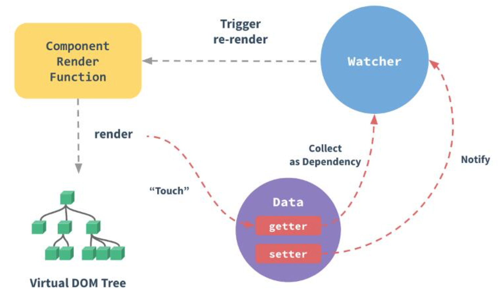
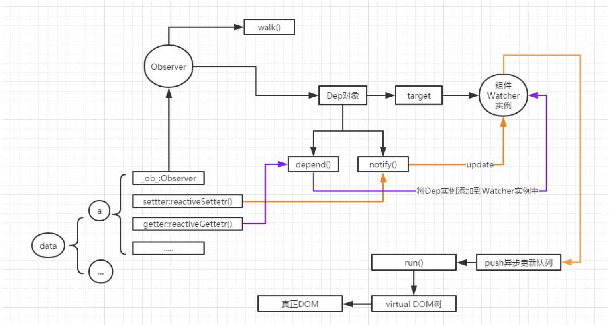
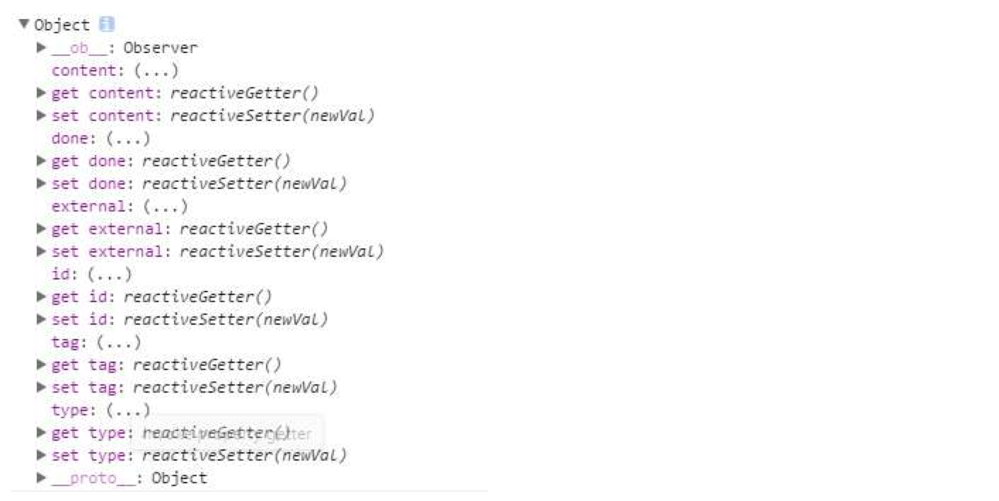

vue响应式原理
概括来说
- 把数据放到vue的data后，数据增加三个属性，ob、getter()、setter()
- 初始化阶段，解析html，找出其中的directive(如v-model)，以及其关联的数据。创建一个directive1实例，创建一个Observer1对象，data1.ob就指向Observer1
- Observer1对象有一个属性 -> 指向当前的Dep对象（只有一个）
- 当调data.setter()，触发Dep.depend(),收集依赖（将watcher1添加到Dep的watchers数组中）
- Dep对象有depend()+notify()两个方法，target：Watchers[watcher1(关联着directive1),watcher2]
- 当调data1.getter(),触发notify(),然后通知Watcher1对directive1->Vdom->真实dom一路进行更新，这里会有一个异步更新队列。
细致来说
vue作为一种MVVM框架，视图响应数据变化是它的一大特点，那么是时候来探索一下它背后的原理了，本文仅代表现阶段个人的理解，如有错误欢迎指出。以下是一幅很关键的图，也是官网给出的图。 
vue响应式有很关键的三个元素Observer，Watcher，Directive 其实底下这个图有点乱，大致可以理解下，因为分两个阶段，有些部分串起来了，具体还是参考着文字走吧，我是这么觉得的。 
Init 初始化阶段
目标
当把一个普通的数据放入vue的data中后会有如下变化
- this.a = this.$data.a 通过实例对象直接能访问到数据
通过console.log打印数据，将会变成下图的样子，发现多了：
ob属性
- getter方法
- setter方法

怎么做
那么Vue都做了些什么呢？请往下看
src/core/instance/state.js
initState
initProps initMethods initData ( 重点 ) initComputed initWatch
initData 方法
initData
proxy() // 实现第一项目标 observe()
proxy方法：
遍历data的key，通过(es5)Object.defineProperty的getter和setter方法将其所有属性代理到vm实例上
observe方法：
- 检测是否已经添加了ob属性
- 检测是否满足条件
- 创建一个Observer对象
- 将Observer对象作为该对象的属性 ob:Oberver
Observer类
walk() // 如果属性是对象，让它拥有getter和setter方法 Dep对象 // 简单的观察者模式
target // 开始为null，（编译阶段）指向当前组件的Watcher实例 depend() // collect dependencies (收集依赖) ——getter方法会触发 notify() // dispatch updates (通知更新) ——setter方法会触发
Complier 编译阶段
目标
建立Watcher和Directive和Observer的联系
- Observer的Dep建立watcher队列，那么当数据更新时去通知这些watcher
- 同时每个watcher又对应一个directive这样就可以更新数据了
- 官网上有这么一段话，但我通过源码的理解是一个组件有很多的directive，每个directive对应一个watcher，同时这个watcher是在组件实例的watchers数组中的
每个组件实例都有相应的 watcher 实例对象，它会在组件渲染的过程中把属性记录为依赖，之后当依赖项的 setter 被调用时，会通知 watcher 重新计算，从而致使它关联的组件得以更新。
怎么做
- vm.complier()将template转换为document.fragment(拿到el对象)
- 解析其中包含的指令(解析器Parser)
- 指令所依赖的数据 this.a
- 指令的更新方式
- 创建Directive实例，将其添加到directive数组中
- 为Directive初始化一个Watcher(expOrFn,callback)，将其push到组件实例的watchers中
this.vm = vm vm._watchers.push(this) - 向Watcher构造函数中传入指令的expression(String),例如"a"
// 把 expression 转化为 getter() //这里不是很理解 expression 和 expOrFn的关系 if (typeof expOrFn === 'function') { this.getter = expOrFn //如果是函数那么直接赋值 } else { this.getter = parsePath(expOrFn) //不然的话转换一下 if (!this.getter) { this.getter = function () {} process.env.NODE_ENV !== 'production' && warn( `Failed watching path: "${expOrFn}" ` + 'Watcher only accepts simple dot-delimited paths. ' + 'For full control, use a function instead.', vm ) } } - Watcher 的get()调用pushTarget(): 将Dep.target指向当前Watcher实例
- Watcher 的get()调用 this.getter.call(vm, vm)，触发此Watcher依赖项属性的getter，调用其dep.depend()重新收集依赖，其实也就是把该watcher添加到所有依赖项dep对象的watcher队列中， 然后把其dep添加到当前watcher的deps数组中，这样数据更新时就会调用dep的notify来通知其关联watcher(也就是队列中的所有watcher),来让它们都调用update更新
// Watcher的get()方法
get () {
pushTarget(this) //将Dep.target指向当前Watcher实例
let value
const vm = this.vm
if (this.user) {
try {
value = this.getter.call(vm, vm)
} catch (e) {
handleError(e, vm, `getter for watcher "${this.expression}"`)
}
} else {
value = this.getter.call(vm, vm) // 触发实例data上所有属性的getter重新收集依赖
}
// "touch" every property so they are all tracked as
// dependencies for deep watching
if (this.deep) {
traverse(value)
}
popTarget() // 依赖收集完毕后，再调用Dep.popTarget()，让dep的target=null
this.cleanupDeps()
return value
}
当前运行的 Watcher 只能有一个，也就是Dep.target的指向
// Dep 的 pushTarget() 和 popTarget ()
Dep.target = null
const targetStack = []
export function pushTarget (_target: Watcher) {
if (Dep.target) targetStack.push(Dep.target)
Dep.target = _target
}
export function popTarget () {
Dep.target = targetStack.pop()
}
//Dep类
export default class Dep {
static target: ?Watcher;
id: number;
subs: Array<Watcher>; // Watcher队列
//调用属性的setter触发其Dep.depend()
depend () {
if (Dep.target) {
Dep.target.addDep(this) // 为当前Watcher实例添加这个Dep
}
}
// Watcher的addDep()方法
// Add a dependency to this directive.
addDep (dep: Dep) {
const id = dep.id
if (!this.newDepIds.has(id)) {
this.newDepIds.add(id)
this.newDeps.push(dep)
if (!this.depIds.has(id)) {
dep.addSub(this) //调用Dep 的addSub()，将此Watcher添加到这个dep的watcher队列中
}
}
}
// Dep 的addSub()
addSub (sub: Watcher) {
this.subs.push(sub)
}
// Dep的notify()
notify () {
// stabilize the subscriber list first
const subs = this.subs.slice()
for (let i = 0, l = subs.length; i < l; i++) {
subs[i].update() //通知Watcher队列的所有watcher去调用update()
}
}
}
数据更新
- 通过 setter()更新数据
- 触发 Dep.notify()
- 调用 Watcher 实例的 update()
- 满足条件，调用 Watcher 实例的 run() 更新 DOM
- 如果同一个 Watcher 被多次触发，为了减少 DOM 操作 会将 Watcher 实例 push 到一个异步更新队列中
update () {
/* istanbul ignore else */
if (this.lazy) {
this.dirty = true
} else if (this.sync) {
this.run()
} else {
queueWatcher(this)
}
}
Virtural DOM
Vue2.0 引入了很多特性
轻量 体积小 runtime-only 压缩后只有16kb 支持服务器流式渲染 用 VirtualDOM 对渲染层进行了重写
问题
不当的 DOM 操作很容易引起浏览器重排，对性能来说是一大杀手
方式
Virtual DOM 是在js操作和DOM操作之间的一个中介，就好比内存之于CPU和硬盘
步骤
- 用js对象模拟一棵DOM树 (节点类型 属性 子节点)
- 基于状态变化，生成另一棵变化后的树
- 比较两棵虚拟DOM树之间的差异
- 找出从一棵树到另一棵树变化的最小步骤(diff算法)
- 把差异部分应用到真正的DOM上